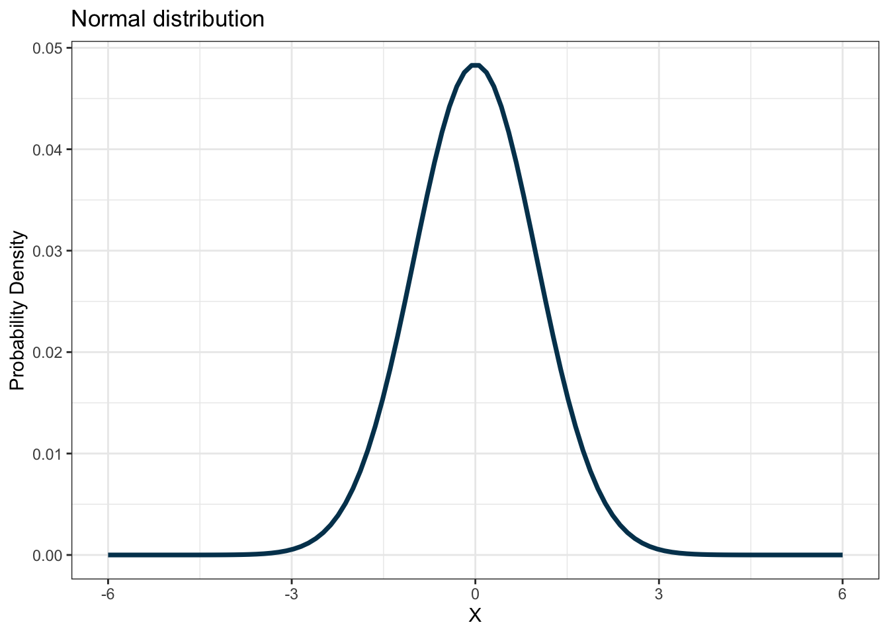
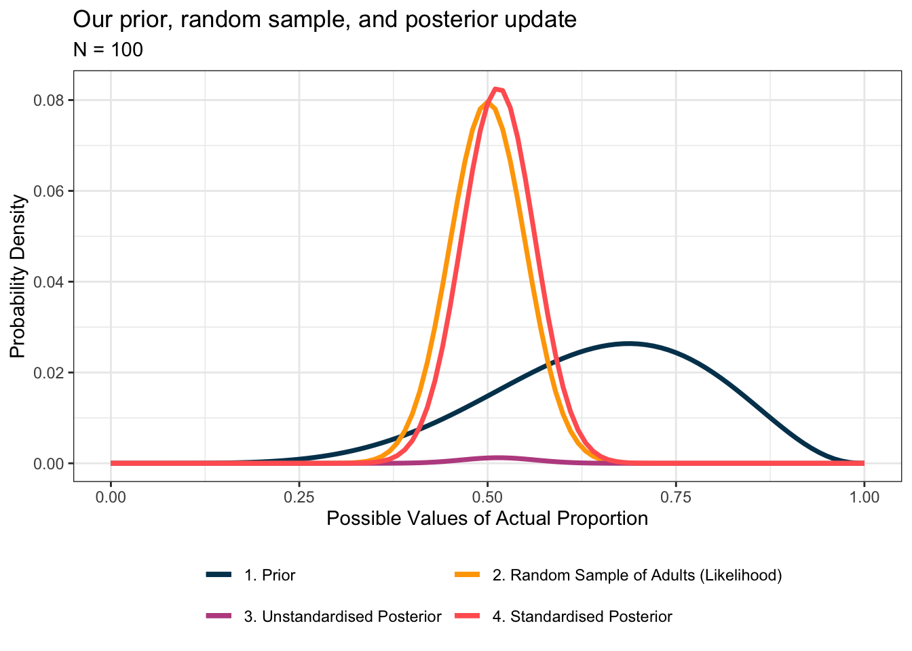
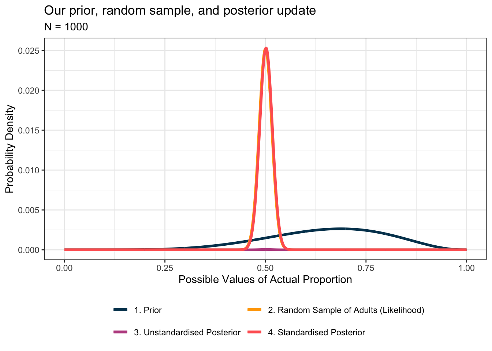

Chapter 2 Thinking generatively
The normal distribution is the only type of distribution I learnt in my formal psychology education. Everything had to be normal - from distributions of quantitative variable values to all the assumptions made in statistical tests. There was no indication at all that other probability distributions existed, let alone their immense utility and appropriateness in many circumstances. Further, emphasis was very heavy on the summative parts of analysis, that is, that certain aspects of our model diagnostics must be normally distributed. But no focus was given to the important concept of the underlying process - the statistical process which generated the data we have seen. Indeed, this means many models in psychological research are purely a means to an end and based on the limited tools that are taught. I would not be surprised to hear sentiment from students such as ‘I need to remove univariate outliers because they violate normality’.
Two much more important questions arise out of this scenario:
- Is it possible that these ‘outliers’ are actually part of the population you are drawing from? (Given you sampled them, chances of this being yes are probably very high, meaning you have strong theoretical grounds to not remove them - it’s more likely your model is inappropriate)
- Are you sure that the underlying process generating your observed data is actually [Gaussian]? (https://en.wikipedia.org/wiki/Gaussian_function?) What evidence do you have that suggests this explicitly?
These questions require a different type of thinking that could be called generative as it considers the core of all statistics - the actual data generation process. But this line of thinking is not taught in psychology at university, the focus is so much on the tools themselves in SPSS or other software and how the outputs are likely to be, rather than the underlying statistical mechanics of our areas of interest. As I was writing this chapter, a tweet by the fantastic Michael Betancourt summarised the issue well. Essentially, instead of worrying about how the effects will look in your model outputs, you should consider modelling the process that generated the data you observed/sampled. You can use the mathematics of likelihood functions to work through it.
There are several reasons that may underpin this lack of sound statistical thinking, but I’ll just address a core one here - the absence of mathematical rigour. I did not see the formula for the normal distribution (or another other, obviously) in my psychology classes. So students blindly fit models that assume normality for various aspects of their design without understanding how they actually work. Let’s take standard maximum likelihood linear regression for example.
Most students would be able to recite the obvious: instead of fitting ordinary least-squares, maximum likelihood maximises the likelihood function. But most students would not then be able to tell you what the likelihood function does. What it does is find the parameters of your probability density function (in this case, the normal distribution) that maximise the overall likelihood (more specifically, the negative log-likelihood, but more on this later) of observing your data. For the normal distribution, these parameters are just the mean and standard deviation. This frequentist interpretation means that we assume the parameters themselves are fixed values that we are trying to estimate through our model, while the data itself is random. Further, if we collect enough data (i.e. run the study many more times, therefore sampling closer and closer to the whole population), we will eventually approximate the true parameters values that are fixed.
Since the normal distribution is fully specified by its mean (\(\mu\)) and standard deviation (\(\sigma^{2}\)), we can write this as shorthand:
\(X \sim \mathcal{N}(\mu,\,\sigma^{2})\)
The full equation for normal distribution is:
\(f(x) = \frac{1}{\sigma \sqrt{2 \pi}}e^{-\frac{1}{2}(\frac{x-\mu}{\sigma})^{2}}\)
The math may look intense if you haven’t come across many equations in your studies, but all we are doing in practice is inserting values for x (the observed data), \(\mu\) (the mean), and \(\sigma\) (the standard deviation). Simple, right? Visually, it looks like this:

With this in mind, let’s quickly revisit what maximum likelihood is doing. It is finding the values for the mean and standard deviation that across all your observed datapoints, maximise the overall output value of the function. Luckily, modern software such as R, Python, and Julia (among many others) use nonlinear optimisers to find these values for us very quickly. It would take a long time to test many different values for both and determine the optimal ones. Now that we understand how the backbone of almost all models in frequentist statistics work, we can start to link back to this notion of thinking generatively. If you truly believe the process generating your observed data is Gaussian, then two questions should come to mind:
- What do I believe the true mean value might be? How certain am I of this?
- What do I believe the true standard deviation value might be? How certain am I of this?
We are now at the crux of statistical thinking! You are now reasoning deeply about the appropriateness of model parameters and probability distributions that may have generated the data you have seen. This thinking takes you beyond the immediate concern of what might pop out of your model in an SPSS or R summary output, and gets you thinking about the much more important questions.
Let’s take a look at an example to visualise what’s going on. We are going to be using the R programming language. If you are unfamiliar with R, it is an open-source programming language that is very powerful and flexible, and is the primary language used in the statistical and econometric sciences, among many others. R has a lot of fantastic and intuitive data wrangling, statistical analysis, and data visualisation toolboxes that are far more extensive, reproducible, and free compared to the software that dominates psychology, such as SPSS and MPlus and paid add-ons such as AMOS.
If you come from an SPSS (or other) background and have never coded before, fear not! I firmly believe anyone can become a programmer and now is definitely the time to start. As this resource is not an “introduction to programming” text, there is some assumed knowledge. If anything does not make sense, please search the piece of code or topic (especially on Stack Overflow) and try and figure it out. This is how most of us solve problems on real projects and simply knowing what or how to search for information and solutions is a critical skill in any programmer or statistician’s toolkit. Another excellent resource is R for Data Science by Hadley Wickham. If you cannot find the answer, though, feel free to send me a message (details at the bottom of this chapter).
2.1 Installing R and RStudio
You can download R here and RStudio here. RStudio is an integrated development environment for writing the R language, exploring datasets, inspecting graphics, and managing version control of code. Install R first, then RStudio. After that, you probably only ever need to open RStudio.
2.2 A short psychological example: Adult satisfaction with their job
In this example, we are going to synthetically construct a basic research question that is somewhat related to psychology, and explore a generative approach to reasoning about it. The research premise is:
Premise: We are interested in understanding what proportion of working adults are satisfied with their jobs.
This overall premise is somewhat similar to the type of topic that a psychology university student might examine for an Honours thesis or other small research project for a course they might take.
2.2.1 Plotting our best guess at the process
We often cannot sample an entire population or know the true actual population parameters. This is entirely the point of statistical inference. However, more often than not, there is a plethora of research available that we often trawl through when constructing literature reviews and new research questions. How can we more effectively put this to use? We can use this existing information to construct a prior understanding of what we think is going on before we observe any data.
Let’s say previous research suggests that the true proportion is somewhere around 0.7, but we aren’t entirely certain. We can use a probability density function to model this best guess with some relative uncertainty around it. In practice, this means the areas of highest probability density (i.e. occurring) will be 0.7 and the immediate proportions around it, while proportions further away from 0.7 will have lower probability density. When your outcome measure of interest is a proportion, a beta distribution is the distribution you should use to model this. We’ll also take this opportunity to load all the packages we need for the entire book.
library(dplyr)
library(tibble)
library(magrittr)
library(tidyr)
library(ggplot2)
library(scales)
library(brms)
library(bayesplot)
library(loo)
library(haven)
library(janitor)
# A colour palette for consistent plotting
my_palette <- c("1. Prior" = "#003f5c",
"2. Random Sample of Adults (Likelihood)" = "#ffa600",
"3. Unstandardised Posterior" = "#bc5090",
"4. Standardised Posterior" = "#ff6361")
# Simulate data
x <- seq(0, 1, length.out = 11)
pr <- data.frame(x = x,
y = dbeta(x, shape1 = 6.5, shape2 = 3.5),
category = "1. Prior") %>%
mutate(y = y / sum(y))
# Plot it
pr %>%
ggplot(aes(x = x, y = y, colour = category)) +
geom_line(size = 1.25) +
labs(title = "Our prior",
x = "Possible Values of Actual Proportion",
y = "Probability Density",
colour = NULL) +
theme_bw() +
scale_colour_manual(values = my_palette) +
theme(legend.position = "bottom")
The y values in this graph represent probability densities. If we take any area between two x values on this graph, we then have the probability that a value lies within. Probability densities by themselves are not probabilities, but they help us understand where most of the data points lie in the underlying distribution (higher probability density = higher concentration of data points).
I’ll leave the true purpose of this initial prior understanding until after we discuss the more familiar likelihood - or as we now know it - the probability distribution that best describes the data we have seen based on an estimated mean and standard deviation.
2.2.2 Plotting a random sample of actual data
Now let’s say we sampled 10 adults students and observed whether they were satisfied with their job or not and 5 said they were. We can then calculate the probability of this occurring.
# The observed data
lh <- data.frame(x = 0:10) %>%
mutate(y = dbinom(x = x, prob = 0.5, size = 10),
category = "2. Random Sample of Adults (Likelihood)") %>%
mutate(x = x / max(x))
# Plot against our prior
pr %>%
ggplot(aes(x = x, y = y, colour = category)) +
geom_line(size = 1.25) +
geom_line(data = lh, size = 1.25) +
labs(title = "Our prior and a random sample of students",
x = "Possible Values of Actual Proportion",
y = "Probability Density",
colour = NULL) +
theme_bw() +
scale_colour_manual(values = my_palette) +
theme(legend.position = "bottom")
2.2.3 Combining our best guess and the observed random sample of data for an informed estimate of the population process
Consistent with probability theory, we can multiple two probabilities (to account for both) to get their joint probability. This means we can multiply our prior by the likelihood to return something known as the posterior.
# Multiply prior and likelihood to get the 'posterior'
posterior <- data.frame(x = x,
y = pr$y*lh$y,
category = "3. Unstandardised Posterior")
# Plot against our prior and the likelihood
pr %>%
ggplot(aes(x = x, y = y, colour = category)) +
geom_line(size = 1.25) +
geom_line(data = lh, size = 1.25) +
geom_line(data = posterior, size = 1.25) +
labs(title = "Our prior, random sample, and posterior update",
x = "Possible Values of Actual Proportion",
y = "Probability Density",
colour = NULL) +
theme_bw() +
scale_colour_manual(values = my_palette) +
guides(colour = guide_legend(nrow = 2, byrow = TRUE)) +
theme(legend.position = "bottom")
As you can see, the posterior appears to resemble a sort of “trade-off” between our prior and the observed data. Building on this, so far we have looked at a sample of ten random adults. You might begin to wonder what the posterior distribution looks like if our sample size was larger but 50% still said they were satisfied with their job. Does our initial guess/intuition (the prior) become less important as we understand more of the actual population? Let’s take a look - we are going to write a function that we can reuse that only takes a sample size as an input.
do_bayes <- function(n = 100){
# Prior
x <- seq(0, 1, length.out = n+1)
pr <- data.frame(x = x,
y = dbeta(x, shape1 = 6.5, shape2 = 3.5),
category = "1. Prior") %>%
mutate(y = y / sum(y))
# Likelihood
lh <- data.frame(x = 0:n) %>%
mutate(y = dbinom(x = x, prob = 0.5, size = n),
category = "2. Random Sample of Adults (Likelihood)",
x = x / n)
# Posterior
posterior <- data.frame(x = x,
y = pr$y*lh$y,
category = "3. Unstandardised Posterior")
st_post <- posterior %>%
mutate(y = y / sum(y),
category = "4. Standardised Posterior")
p <- pr %>%
ggplot(aes(x = x, y = y, colour = category)) +
geom_line(size = 1.25) +
geom_line(data = lh, size = 1.25) +
geom_line(data = posterior, size = 1.25) +
geom_line(data = st_post, size = 1.25) +
labs(title = "Our prior, random sample, and posterior update",
subtitle = paste0("N = ", n),
x = "Possible Values of Actual Proportion",
y = "Probability Density",
colour = NULL) +
theme_bw() +
scale_colour_manual(values = my_palette) +
guides(colour = guide_legend(nrow = 2, byrow = TRUE)) +
theme(legend.position = "bottom")
return(p)
}
p_100 <- do_bayes(n = 100)
print(p_100)
As you can see, as sample size increases, the posterior distribution is driven more and more by the likelihood - meaning the prior (especially a ‘wide’ or ‘uninformative’ prior) becomes increasingly less important. Moreover, if we specify a very narrow/specifc prior (commonly referred to as ‘informative’), this diminishing importance relative to the likelihood is not as strong as what we see here. In theory, when sample sizes are very large, the results produced by this line of thinking get closer and closer to those produced by the maximum-likelihood-driven analysis we are familiar with. More simply, as sample sizes increase, the posterior approximates the likelihood. Very interesting! Let’s try N = 1,000 just to really drive this point home:

Evidently, at a sample size of N = 1000 the likelihood and the standardised posterior basically fully overlap (which is why the likelihood visually appears mostly ‘hidden’). The other important thing that might stand out to you at this point is the inclusion of something called the Standardised Posterior which is calculated as the unstandardised posterior probability densities divided by the sum of all the probability densities. This ensures our posterior probabilities are actual probabilities (meaning they sum to 1). Let’s explore this in more detail.
2.3 The essence of Bayesian statistics
The steps we have just gone through are actually in fact the core of Bayesian statistics. These three components, the prior, likelihood, and posterior (the combination of the two), are the essential parts of Bayes’ theorem. In order to turn this posterior into an actual probability distribution, we need to standardise our new estimates across all the probabilities of the data occurring, so we divide the prior-likelihood product by this marginal likelihood (see the “Standardised Posterior” in the previous example). This leaves us with the full Bayes’ theorem:
\(P(\theta \mid D) = \frac{P(D \mid \theta) \cdot P(\theta)}{P(D)}\)
Where:
\(P(\theta \mid D)\) - this is called the posterior (probability of model parameters given the data)
\(P(D \mid \theta)\) - this is called the likelihood (probability of the data given model parameters)
\(P(\theta)\) - this is called the prior (our expressed understanding of the probability of model parameters)
\(P(D)\) - this is called the marginal likelihood (probability of the data)
Let’s pause for a moment. We started out discussing regular old normal distributions and statistics, and ended up in the Bayesian world. How did this happen? Essentially, the likelihood is the nexus between both realms of statistics. In the frequentist world, the likelihood is the estimated function of interest, whereas in the Bayesian world, it forms one piece of the puzzle, allowing us to combine is with any prior knowledge and/or uncertainty we have. Very neat.
2.3.1 Taking uncertainty quantification a step further
Since we are in the mindset of generative thinking, we are not restricted to the single value guesses at the true population distribution mean and standard deviation. In Bayesian statistics, we can specify a distribution of potential values for each of the mean and standard deviation. Practically, if we assessed prior research and found that estimates of the mean varied by some amount, we might assume that the true value of the mean lies somewhere within a probability distribution of the values we found in prior research. We could calculate a mean and standard deviation of this collection of prior means, and feed that uncertainty in the model, giving us more flexibility over how we conceptualise the underlying statistical process and quantify our inherent uncertainty. We can of course do the same for the standard deviation. This can be thought of as placing distributions on the parameters of distributions.

Using the power of modern statistical computing libraries such as Stan that allow us to use algorithms such as Hamiltonian Monte Carlo, we can simulate the underlying statistical process and obtain probabilistic estimates of the parameters of interest, conditioned on the data we have observed. This means we are not restricted by the limiting assumptions of frequentist statistics which largely denotes that parameter values are fixed and the data is random. An explanation of Hamiltonian Monte Carlo is beyond the scope of this chapter, but for an intuitive and informal high-level understanding of what Hamiltonian Monte Carlo is doing, check out this Twitter thread by Michael Betancourt or his excellent paper on the topic.